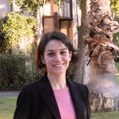
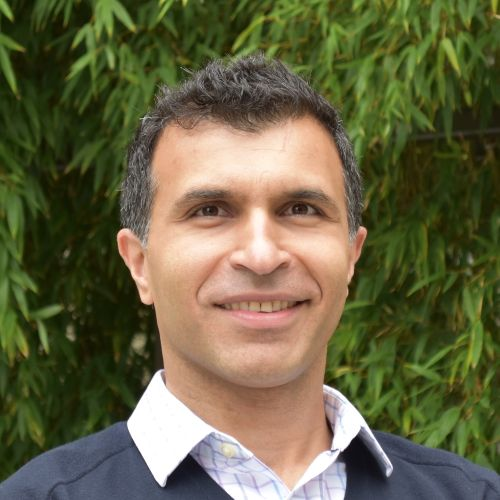
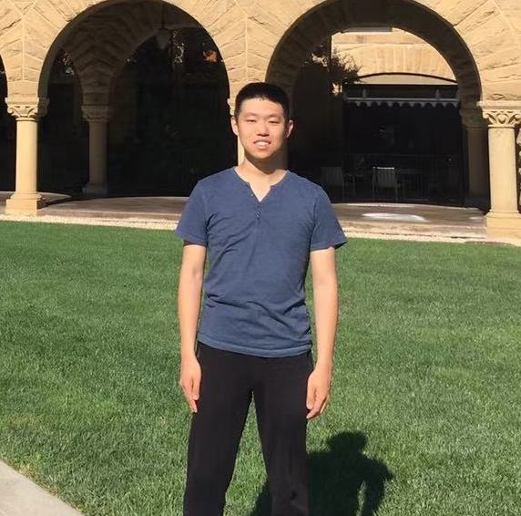

Members of IFDS
Faculty

Maryam Fazel
Convex optimization, Algorithms, Machine Learning, and Control
Zaid Harchaoui
Safe Statistical Machine Learning, Representations For Signals and Images
Yin Tat Lee
Convex Optimization, Convex Geometry, Spectral Graph Theory, Online Algorithms
Affiliates
Sasha Aravkin
Convex and Variational Analysis, Machine Learning, Robust Statistics, Nonconvex Optimization
Ofer Dekel
Machine Learning, Online Prediction, Algorithm Engineering
Mathias Drton
Graphical Models, Algebraic Statistics, Model Selection
Abraham Flaxman
Global Health, Health Metrics, Bayesian Computation, Machine Learning.
Emily Fox
Large-scale Bayesian Dynamic Modeling and Computations
James Lee
Algorithms, Metric Embeddings, Spectral Graph Theory, Convex Optimization
Marina Meila
Machine Learning, Clustering, Geometric Data Analysis, Networks, Preference Modeling
Mark Schmidt
Machine Learning, Convex Optimization, Graphical Models

Ali Shojaie
Statistical Network Analysis, Statistical Machine Learning for Complex Systems.
Tom Trogdon
Random Matrix Theory, Nmerical Analysis and Spectral Methods
Lin Xiao
Large-scale Optimization, Parallel and Distributed Computing.
Postdocs
Ramya Vinayak
Clustering, Crowdsourcing, Convex Optimization, Machine Learning.
Graduate Students

Yue Sun
Statistical Machine Learning, Non-convex Optimization
John Thickstun
Representation learning, Time Series Models, Structured Prediction, Applications to Music.
Undergraduate Students